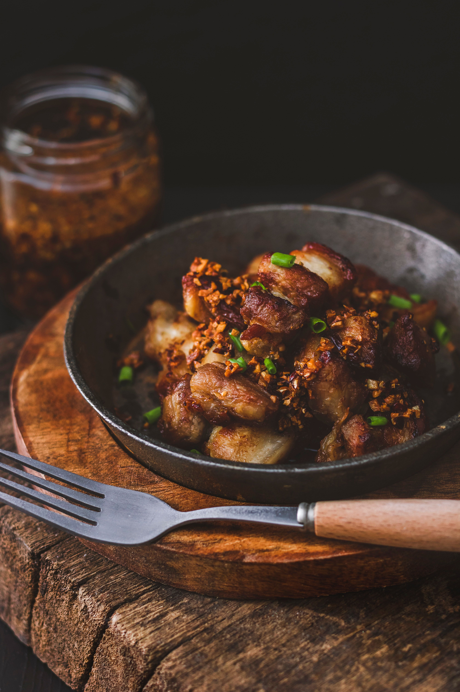

Home
Pork Sisig

Description
A Filipino favorite made with crispy, chopped pork, sautéed onions, chili, and a savory-citrusy seasoning. It is traditionally served sizzling hot and pairs perfectly with steamed rice.
Ingredients
- 500 g pork belly
- 200 g pork liver
- 1 medium onion, finely chopped
- 3 cloves garlic, minced
- 2–3 red or green chilies, chopped
- 2 tbsp soy sauce
- 2 tbsp calamansi juice
- 2 tbsp mayonnaise
- 1 tbsp cooking oil
- ½ tsp salt
- ½ tsp black pepper
- 1 egg (optional)
Steps
- Rinse the pork belly and pork liver, then pat them dry with paper towels.
- Season the pork belly and liver with salt and black pepper.
- Grill, broil, or pan-sear the pork belly until browned and crispy on the outside and fully cooked inside.
- Cook the pork liver until completely done, then set it aside to cool slightly.
- Finely chop the cooked pork belly and pork liver into small pieces.
- Heat cooking oil in a pan and sauté the garlic and onion until fragrant and slightly softened.
- Add the chopped pork and liver, then stir-fry for several minutes until the mixture becomes hot and slightly crispy.
- Add the soy sauce, calamansi juice, and chopped chilies, then mix thoroughly and adjust the seasoning to taste.
- Stir in the mayonnaise and cook for another minute, or transfer the mixture to a heated sizzling plate and top with an egg if desired.
- Serve the sisig immediately while sizzling, with extra calamansi and chilies on the side.